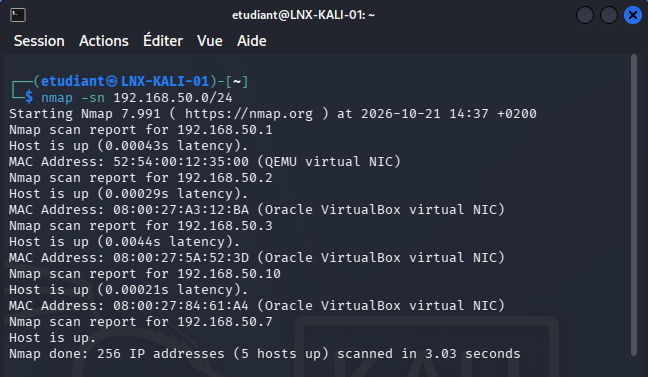

Fiche de quête · Quête secondaire
Installation de systèmes sous VirtualBox
Six machines virtuelles Windows et Linux installées sur un même PC, reliées par un réseau virtuel commun, testées puis documentées pas à pas.
Briefing de mission
Contexte
Ce que c'est
Un TP de virtualisation : construire, sur un seul ordinateur, un petit parc informatique complet. Deux postes Windows 11, un serveur Windows Server 2025 et trois postes Linux (Ubuntu, Linux Mint, Kali Linux) fonctionnent en même temps dans VirtualBox et partagent le même réseau.
À quoi ça sert
La virtualisation permet de tester un système, de préparer un déploiement ou de reproduire une panne sans toucher au matériel réel ni à la production. Ce TP reprend les gestes du quotidien d'un technicien : préparer un poste modèle puis le cloner, configurer l'adressage réseau, vérifier que les machines communiquent et pouvoir revenir en arrière grâce aux instantanés.
Conditions de la mission
- Un seul PC hôte (16 Go de RAM) pour faire tourner toutes les machines.
- Nommage et adressage imposés par l'énoncé (WIN-CLI-01, WIN-SRV-01, LNX-UBU-01…, réseau 192.168.50.0/24).
- Cadre légal : les outils d'audit de Kali Linux ne sont utilisés que sur les machines du TP (articles 323-1 et suivants du Code pénal).
Objectifs de la quête
Objectifs
- Objectif 1 — Installer : créer les six machines virtuelles et installer chaque système, dont un poste Windows 11 généralisé avec Sysprep puis cloné.
- Objectif 2 — Relier : connecter toutes les machines au réseau NAT RN-TPOS (192.168.50.0/24), en DHCP pour les postes et en adresse fixe pour le serveur.
- Objectif 3 — Valider : prouver que tout fonctionne (ping, résolution de noms, scan du réseau) et qu'un instantané permet de restaurer un système.
Étapes de la quête
Solution
Préparation de VirtualBox et du réseau
Installation de VirtualBox et de son Extension Pack, création du réseau NAT RN-TPOS (192.168.50.0/24, DHCP activé) et d'un groupe pour ranger les machines.
Postes Windows 11 : modèle et clone
Installation de WIN-CLI-01 (compte local, mises à jour, instantané), généralisation avec Sysprep puis clonage en WIN-CLI-02. Vérification avec
whoami /useretipconfig /all: chaque poste a son propre SID et sa propre adresse MAC.Serveur Windows Server 2025
WIN-SRV-01 avec interface graphique : adresse IP fixe 192.168.50.10, fuseau horaire et nom configurés depuis le Gestionnaire de serveur.
Postes Linux
Ubuntu (mises à jour, serveur SSH), Linux Mint (miroirs de mises à jour français, sauvegarde système avec Timeshift) et Kali Linux (installation graphique, mise à jour complète).
Tests et instantanés
Ping entre les machines, vers Internet (8.8.8.8) et par nom (www.debian.org), découverte du réseau avec nmap depuis Kali, puis restauration d'un instantané : le fichier de test créé après l'instantané a bien disparu.

Butin et bilan
Résultats
- Six machines virtuelles opérationnelles, nommées et adressées conformément à l'énoncé.
- Tous les tests validés : communication entre les machines, accès à Internet, résolution de noms, scan du réseau et restauration d'instantané.
- Seize incidents rencontrés, diagnostiqués et résolus (Sysprep bloqué par le stockage réservé puis par BitLocker, machine restée hors du réseau, pare-feu Windows bloquant le ping, DNS muet…), chacun documenté : symptôme, diagnostic, cause, solution et vérification.
- Livrable : une documentation technique de 53 pages, utilisable comme procédure pas à pas.
Bilan personnel : ce TP m'a appris à diagnostiquer avec méthode plutôt que de réessayer au hasard : lire les journaux (setupact.log a donné la cause exacte des deux échecs de Sysprep), isoler la couche en défaut (8.8.8.8 répond mais pas www.debian.org : c'est le DNS), relire mes commandes caractère par caractère et toujours prendre un instantané avant une opération risquée.
Livrable
Documentation technique
La documentation complète du TP : la procédure pas à pas, illustrée de 133 captures, puis une annexe qui regroupe les 16 fiches de résolution d'incidents.
Clique ou fais glisser une arme vers le centre.